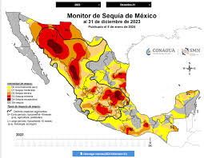
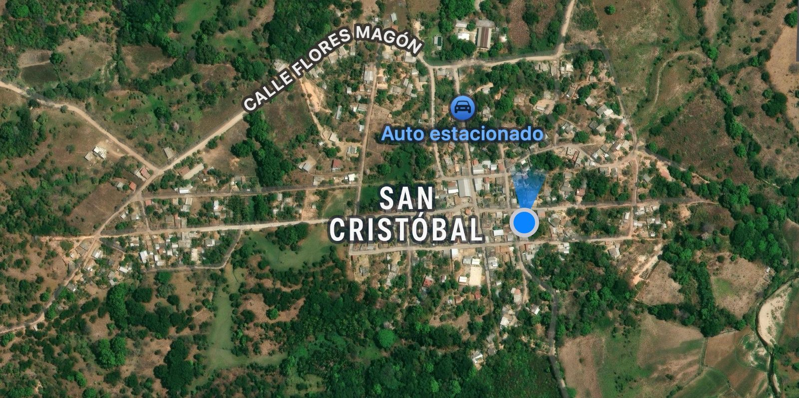
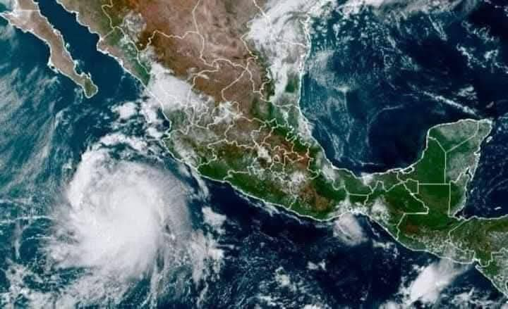

Descripción
San Cristóbal, Chayúco, es una localidad situada a 300 metros sobre el nivel del mar, lo que influye significativamente en su clima. Su ubicación geográfica y altitud determinan condiciones meteorológicas particulares, caracterizadas por temperaturas frescas, lluvias estacionales y variaciones climáticas a lo largo del año. En las últimas décadas, la región ha experimentado cambios notables en su clima, lo que ha generado preocupación entre sus habitantes.
Características
San Cristóbal, Chayúco, posee un clima cálido, con una temperatura promedio anual de aproximadamente 29 °C. Debido a su altitud, el clima es moderadamente cálido. Durante el año, las temperaturas pueden oscilar entre los 24 °C y los 25 °C, aunque en algunas ocasiones se han registrado descensos más drásticos, alcanzando los 22 °C en las noches más frías del invierno.
Incremento de temperatura
Si bien San Cristóbal, es conocido por su clima cálido, en los últimos años se ha detectado un ligero aumento de temperatura máxima. Durante el verano algunos días han registrado hasta 35°C, lo que ha generado preocupaciones entre los habitantes, quienes no están acostumbrados a temperaturas tan altas.

Impacto de clima
El clima no solo afecta el bienestar de la población, sino también la economía local. La agricultura, es una de las principales actividades económicas de la zona, ha sido golpeada por los cambios en la precipitación de las temperaturas extremas.

Infraestructura vial
Se ha visto comprometida debido a las lluvias y deslaves punto camino rurales han sido dañados, dificultando el acceso a comunidades alejadas y afectando el transporte de bienes y servicios con punto la población ha solicitado mayor atención por parte de las autoridades para mejorar las condiciones de las carreteras y garantizando la seguridad de los viajeros.
En conclusión
En San Cristóbal, es un factor determinante en la vida de sus habitantes su ubicación a 300 metros sobre el nivel del mar le otorga características climáticas particulares con temperaturas calida y en frecuencias presenta un poco de neblina. Sin embargo, en los últimos años, las variaciones climáticas han sido más notorias, afectando la seguridad, la economía y la salud de la población. 